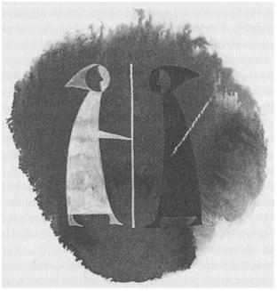

ON: AÇIK DENİZ

Liman artık gözden kaybolmuştu; Ufkabakan'ın deniz suyuyla sırılsıklam olmuş gözleri, önünde uzanan, daha engin ve ıssız denizlere çevrilmişti. Yoldaşlar iki gün ve gecede, İffish'ten Soders Adası'na geçmişlerdi; bu, yüz millik kötü hava koşulları ve ters rüzgârlar demekti. Buradaki limanda çok kısa bir süre kaldılar; ancak su tulumlarını dolduracak ve güvertesi olmayan teknelerinin içindeki takımlarını, yağmur ve deniz suyundan korumak için katran sürülmüş yelken bezi alacak kadar. Bunları daha önce sağlamamışlardı, çünkü normalde büyücüler böyle ufak tefek işleri büyü ile hallederler; son derece sıradan ve ufak büyülerle. Deniz suyunu içilir duruma getirmek içinse, birazcık daha fazla büyüye gerek vardır. Böylece büyücülerin yanlarında taze su taşımalarına gerek kalmaz. Ama Ged, bu konudaki yeteneğini kullanmaya hiç niyetli görünmediği gibi, Vetch'in de kullanmasını istemiyordu. Sadece, "Yapmasak daha iyi," deyince, arkadaşı ne nedenini sordu, ne de onunla tartıştı. Çünkü, rüzgâr yelkenlerini şişirdiği ilk andan beri, her ikisi de kötü bir şeylerin olabileceğini sezmişlerdi; en az bu kış rüzgârı gibi ürpertici bir şeyin. Korunak, liman, huzur, emniyet; bunların hepsi geride kalmıştı. Hepsine yüz çevirmişlerdi. Artık her olayın kendi başına bir tehlike olduğu ve hiçbir hareketin anlamsız olmadığı bir yolda ilerliyorlardı. Giriştikleri bu yolda, en basit bir büyünün söylenmesi bile şanslarını döndürebilir, gücün ve sonucun dengesini değiştirebilirdi. Çünkü şu anda, dengenin tam ortasına, ışıkla karanlığın birleştiği noktaya doğru gidiyorlardı. Böyle bir yolculuğa çıkanlar, düşüncesizce tek bir söz bile etmezler.
Tekrar yelken açarak, beyaz kar tarlalarının sisli tepeler içinde kaybolduğu Soders Adası'nın kıyısı boyunca ilerlediler. Ged, tekneyi tekrar güneye doğru çevirdi. Artık, Adalar Diyarı’nın büyük tüccarlarının hiç ayak basmadıkları sulara girmişlerdi; Uçyöreler'in en son sınırlarına.
Vetch, gidecekleri yönü Ged'in seçmediğini, sadece gitmesi gerektiği yere doğru gittiğini bildiği için, rotaları konusunda Ged'e soru sormuyordu. Soders Adası arkalarında küçülmeye ve solmaya, dalgalar da teknenin burnuna çarpıp tıslamaya başlayınca ve etraflarını, her yandan, ta gökyüzüne kadar gri renkli, muazzam deniz düzlemi kuşatınca, Ged sordu, "Bu yol üzerinde hangi topraklar var?"
"Soders'in güneyinde hiç ada yoktur. Eğer güneydoğuya doğru gidersen, birkaç adaya rastlayabilirsin: Pelimer, Komay, Gosk, Astowell falan. Astowell'e, Sonkara da derler. Onun gerisinde ise Açık Deniz vardır."
"Ya güneybatısında?"
"Rolameny; bizim Doğu Uçyöresi adalarından birisidir; etrafında da birkaç küçük adacık vardır. Sonra Güney Uçyöresi'ne kadar başka bir şey yoktur. Güney Uçyöresi’nde de Rood ve Toom adaları, bir de insanların gitmediği Kulak Adası vardır."
"Biz gidebiliriz," dedi Ged, yüzünü ekşiterek.
"Gitmemeyi tercih ederim..." dedi Vetch, "...dediklerine göre, orası dünyanın uygunsuz bir köşesiymiş; kemik ve uğursuzluklarla doluymuş. Gemiciler, Kulak Adası'ndan ve Far Sorr'dan, dünyanın başka hiçbir yerinden görünmeyen ve bu güne kadar da isimlendirilmemiş yıldızların görüldüğünü söylerler."
"Doğru, beni Roke'a getiren gemide, bundan söz eden bir gemici vardı. Aynı adam Güney Uçyöreler'in iyice ilerisindeki Sal-İnsanları ile ilgili öyküler de anlatmıştı. Bunlar, yılda sadece bir kere, o da salları için büyük kütükler kesmek amacıyla karaya çıkarlarmış; yılın geri kalan zamanında da, tüm o günler ve aylar boyunca, okyanusun akıntılarıyla sürüklenirlermiş. Ama bütün adalardan uzaklarda. Şahsen o saldan köyleri görmek isterim."
"Ben istemezdim," dedi Vetch, sırıtarak. "Bana karalardan ve kara insanlarından söz et; bırak deniz kendi yatağında kalsın, ben de kendiminkinde..."
"Adalar Diyarı'ndaki tüm şehirleri görmek isterdim," dedi Ged, yelken ipini tutarak ve önündeki engin, gri boşluğu süzerek. "Dünyanın kalbi, Havnor; efsanelerin yurdu Ea; Way Adası'ndaki Pınarlarla Dolu Shelieth; tüm kentler ve tüm büyük adalar. Sonra küçük adaları; Dış Uçyöreler'deki garip adaları da görmek isterdim. Ta batıdaki, Ejderhalar Yolu'nda da yelken açmak isterdim. Veya kuzeyde buz sahralarından, doğruca Hogen Adası'na gitmek isterdim. Bazıları, bu adanın, tüm Adalar Diyarı'ndan daha büyük olduğunu söylüyor; bazıları da, burasının sadece arasında buzlar olan kayalıklardan oluştuğunu savunuyor. Kimsenin bir şey bildiği yok. Kuzey denizlerindeki balinaları da görmek isterdim... Ama göremem. Sırtımı parlak sahillere dönerek, gitmem gereken yere gitmeliyim. Çok acelem vardı, şimdi de fazla zamanım kalmadı. Bütün güneş ışığını, kentleri, uzak ülkeleri bir avuç güce sattım; bir gölge için, karanlık için." Böylece her doğma büyüme büyücünün yaptığı gibi Ged de, korkusunun ve pişmanlığının ağıtını yaktı; kısa, yarı söylenmiş ama sadece kendisi için olmayan bir ağıt; arkadaşı cevap olarak Erreth-Akbe'nin Kahramanlıkları kahramanın sözlerini yineledi: "Ah, bir kez daha görebilseydim, dünyanın o parlak ocağını; Havnor'un o beyaz kulelerini..."
Böylece, bu terk edilmiş engin sular üzerindeki dar yollarında ilerlemeyi sürdürdüler. O gün gördükleri en önemli şey, güneye doğru yüzmekte olan gümüş balıkların oluşturduğu sürüydü; hiç sıçrayan bir yunus, gri göğü yaran bir martı, bir karabatak veya deniz kırlangıcı görmemişlerdi. Doğu kararmaya, batı da kızarmaya başlayınca, Vetch, yiyeceklerini çıkartarak pay etti ve, "İşte son biramız. Soğuk havada, susayacak adamları düşünerek, bu testiyi buraya koymayı akıl edenin şerefine; kardeşim Civanperçemi'nin şerefine," dedi.
Bunun üzerine Ged, dalmış gözlerini denizden ayırarak iç karartan düşüncelerinden sıyrıldı ve Civanperçemi'ni, belki de Vetch'ten daha içten selâmladı. Kızın düşüncesi, aklına Civanperçemi'nin zekice ama çocuksu tatlılığının duygusunu getirdi. O güne kadar tanıdığı hiç kimseye benzemiyordu. (Zaten o güne kadar hangi kızı tanımıştı ki? Ama o, bunu düşünmüyordu.) "Küçük bir balığa, berrak bir derede yaşayan minik bir sazana benziyor," dedi Ged, "...savunmasız; ama insan yine de yakalayamıyor onu."
Bu söz üzerine Vetch, gülümseyerek Ged'e baktı. "Sen doğma büyüme bir büyücüsün," dedi. "Civanperçemi'nin gerçek ismi Kest." Kadim Lisan'da kest, Ged'in de çok iyi bildiği gibi, minik sazan balığı demektir. Bu Ged’i çok mutlu etmişti. "Belki de bana onun ismini söylemeseydin daha iyi olurdu," dedi.
Fakat, söylediği sözü düşüncesizce söylememiş olan Vetch, "Onun adı sende, en az benim adım kadar emniyette. Hem sonra, sen zaten ben söylemeden de bunu biliyordun..." dedi.
Batının alı, küllerin içinde kayboldu; külrengi de yerini siyaha bıraktı. Deniz de, gök de tamamen karanlıktı. Ged, kürklü yün cübbesine sarınarak, uyumak için teknenin içine uzandı. Yelken ipini tutan Vetch, ona hafif hafif Enlad'ın Kahramanlıkları adlı şarkıyı söyledi. Şarkıda, Ak Morred'in nasıl büyük, küreksiz bir gemiyle Havnor'dan ayrıldığı ve nasıl baharda Solea Adası'na vardığında Elfarran'ı meyva bahçelerinin arasında gördüğü anlatılıyordu. Ged, şarkı, sevgililerin aşkının hüzünlü sonuna varmadan uyuyakaldı. Sonunda Morred ölmüş, Enlad mahvolmuş; büyük ve zalim deniz dalgaları Solea'nın meyva bahçelerini basmıştı. Geceyarısına doğru Ged uyanarak nöbeti devralınca, Vetch uyudu. Küçük tekne, yelkenlerine dolan sert rüzgârla kayarak çalkantılı deniz üzerinde hızla ilerliyor, gecenin karanlığına körü körüne dalıyordu. Fakat karanlık kırılmaya başlamış ve tan yeri ağarmadan, ay kenarları koyulaşmış bulutların arasından parlayarak denizin üzerine zayıf ışıklarını yaymıştı.
Gün doğmadan önce uyanmış olan Vetch, "ay incelmeye başladı," diye mırıldandı, soğuk rüzgâr bir an için yavaşladığında. Ged, aydınlanmaya başlayan gökyüzünün doğusuna, yarım aya baktı; bir şey söylemedi. Gündönümünden sonra, ayın ilk karanlıkta kaldığı geceye Nadas denir. Bu zaman, yazın Uzun Dans Bayramı'nın kutlandığı, ayın en uzun göründüğü zamanın, tam tersidir. Bu günler, yolcular ve hastalar için uğursuz bir zaman olarak kabul edilir. Nadas'ta, çocuklara gerçek isimleri takılmaz, kahramanlık şarkıları söylenmez, kılıçlar veya sivri, kesici aletler bilenmez, yemin edilmez. Bu günler, yapılan işlerin hep ters gittiği, yılın en karanlık dilimidir.
Soders'den üç gün sonra, deniz kuşlarını ve yosunları izleyerek dalgalı, gri denizden bir kambur gibi yükselen küçük bir ada olan Pelimer'e geldiler. Ada halkı Hardca konuşuyordu ama lehçeleri Vetch'e bile garip gelmişti. Genç adamlar, biraz taze su bulmak, biraz da dinlenmek için burada karaya çıktılar. İlk başta, merak ve heyecanla, çok iyi karşılandılar. Adanın en önemli kasabasında bir sihirbaz vardı; ama adam delirmişti. Sadece, Pelimer'in temelini yemekte olan büyük bir yılandan söz ediyor; böylece adanın temelinden ayrılıp, halatları çözülmüş bir gemi gibi yüzeceğini ve dünyanın kenarından aşağı düşeceğini anlatıyordu. Başlangıçta genç büyücüleri saygıyla karşıladı; fakat yılan hakkında konuşmaya başlayınca, Ged'e şüpheli şüpheli bakmaya, sonra da birdenbire Ged ile Vetch'e sokak ortasında, casuslar, denizyılanının uşakları, diye bağırmaya başladı. Bu olaydan sonra Pelimerliler, Ged ile Vetch'e ters ters bakmaya başladılar; deli de olsa, o onların sihirbazıydı. Böylece, Ged ile Vetch burada fazla kalamadılar; gece çökmeden yola çıkarak, hep güneye ve doğuya doğru ilerlediler.
Denizde yol aldıkları bu günler ve geceler boyunca, Ged, ne gölgeden, ne de avından söz etti. Vetch'in sorduğu, bu konuyla en çok ilgisi olan soru da, (Yerdeniz'in bilinen adalarından gittikçe uzaklaştıktan ve hep aynı rota üzerinde ilerledikleri için) "Emin misin?..." oldu. Ged’in buna cevabı ise, "Demir, mıknatısın nerede olduğundan emin midir?" idi. Vetch başını salladı ve ikisi de bir daha bu konuda bir şey demeden yollarına devam ettiler. Fakat, zaman zaman, eski günlerde yaşamış büyücülerin, tehlikeli güçler ve varlıkların gizli isimlerini bulmak için kullandıkları hünerler ve yöntemler hakkında konuşuyorlar; Palnlı Nereger'in, nasıl Kara Büyücü'nün ismini ejderhalar konuşurken duyduğunu; Morred'in nasıl düşmanın ismini, Enlad Ovaları'ndaki savaş alanındaki tozun üzerine, yağan yağmur damlaları tarafından yazıldığını gördüğünü anlatıyorlardı. Bulma-büyüleri, dualar ve sadece Roke'taki Şekillendirme Ustası'nın sorabileceği, Cevaplandırılabilir Sorular hakkında konuştular. Fakat genellikle Ged konuşmalarını, Ogion'un ona yıllar önce bir sonbaharda, Gont Dağı'nın sırtlarında söylemiş olduğu bir şeyi mırıldanarak bitiriyordu: "Duyabilmek için, susmak gerekir..." Sonra sessizleşip, saatler boyunca, durmadan önünde uzanan denizi seyrederek, derin derin düşünüyordu. Bazen Vetch'e, sanki arkadaşı dalgaların, önlerinde uzanan uzaklıkların ve henüz gelmemiş olan gri günlerin arasından, yolculuklarının karanlıklarla kaplı sonunu ve izlemekte oldukları şeyi görüyor gibi geliyordu.
Kötü bir havada, Kornay ve Gosk adalarının arasından geçtiler. Yağmur ve sisin içinde adaların ikisini de göremediler. Adaları geçmiş olduklarını da, ancak ertesi gün, önlerinde, tiz çığlıkları denizde çok uzaklardan duyulan büyük martı sürülerinin üzerinde uçmakta olduğu, sivri tepeli bir ada gördüklerinde anladılar. Vetch, "Bu ada Astowell'e benziyor. Sonkara. Bu adanın güneyinde ve doğusundaki alanlar bomboştur," dedi.
"Yine de, burada oturanlar, daha uzaklardaki kara parçaları hakkında bir şeyler bilebilir," diye cevap verdi Ged.
"Neden öyle diyorsun?" diye sordu Vetch, çünkü Ged huzursuz bir edayla konuşuyordu. Ged'in bu soruya verdiği cevap da insanı duraksatan, garip bir cevaptı: "Orada değil," dedi, önlerindeki Astowell'e bakarak; sonra bakışları adayı deldi geçti... "Orada değil. Denizde de değil. Denizde değil ama kuru toprakta: Hangi adada? Açık denizin pınarlarından önce, kaynaklarının ötesinde, gün ışığının kapılarının ardında..."
Sonra sustu; tekrar konuştuğunda, sesi gündelik halini almıştı, sanki bir büyüden veya bir görüden kurtulmuş da, ne olduğunu hatırlamıyormuş gibi. Yüksek kayalıkların arasındaki bir dere ağzına kurulmuş olan Astowell limanı, adanın kuzey kıyısındaydı; kasabanın tüm evleri de ya kuzeye, ya batıya bakıyorlardı. Sanki ada yüzünü, çok uzakta da olsa, Yerdeniz'e, insanlığın olduğu yere doğru çevirmişti.
Hiçbir geminin Astowell'in çevresindeki denizlerde dolaşmaya cesaret edemediği bir mevsimde yabancıların gelişi, heyecan ve korku yarattı. Kadınlar çalı çırpıdan yapılmış evlerinden dışarıya çıkmadılar; çocuklarını eteklerinin arasına saklayarak kapıdan gözetlediler; yabancılar kumsaldan beriye gelirken, korkuyla kulübelerinin karanlığına çekildiler. Soğuğa karşı yetersizce giyinmiş olan erkekler ise, Vetch ile Ged’in etrafında, asık yüzlerle bir halka oluşturdular. Her birinin elinde, ya taştan bir balta, ya da deniz kabuğundan bir bıçak vardı. Fakat bir kez korkuları geçince, yabancıları tüm samimiyetleriyle kucakladılar; sorularının ardı arkası kesilmiyordu. Adalarına gemiler çok ender geliyordu, hatta Soders ve Rolameny adalarından bile; adadakilerin tunç ve çanak çömlekle değiş tokuş edebilecekleri bir şeyleri yoktu; tahta bile yoktu. Kayıkları bile sazdan örülerek yapılmıştı; öyle bir tekne içinde, Gosk veya Kornay'a ancak cesur denizciler gidebilirdi. Burada, tüm haritaların kıyısında, tek başlarına yaşıyorlardı. Ne bir cadıları, ne de bir sihirbazları vardı; görünüşe göre, genç büyücülerin asalarının da ne olduğunu pek anlamamışlar; bunları, sadece yapılmış oldukları kıymetli maddeden, yani tahta olduklarından dolayı hayranlıkla seyrediyorlardı. Adanın reisi çok yaşlıydı; halkı arasında bir tek o, daha önce, Adalar Diyarı'nda doğmuş bir adam görmüştü. Bu yüzden, Ged onlara çok ilginç gelmişti. Adamlar gidip oğlan çocuklarını, Adalar Diyarı'ndan gelen bu adama bakmaları için getirdiler; çocuklar yaşlandıklarında, Adalar Diyarı'ndan gelen birisini gördüklerini anlatabilsinler diye. Gont'u, hiç duymamışlardı; sadece Havnor ile Ea'yı biliyorlardı. Ged'i de bir Havnor lordu zannettiler. Ged, hayatında hiç görmemiş olduğu beyaz kent ile ilgili soruları, elinden geldiğince cevapladı. Fakat, akşam saatleri ilerledikçe huzursuz olmaya başladı; sonunda, köyün misafirhanesindeki ateş çukurunun etrafında, ellerinde bulunan tek yakacak olan keçi gübresi ve süpürge çalılarının pis kokan sıcaklığında dizilmiş otururken, köy adamlarına sordu: "Adanızın doğusunda ne var?"
Hiç kimse konuşmadı; kimisi sırıtıyor, kimisi suratını asıyordu.
Yaşlı reis cevap verdi, "Deniz."
"Onun gerisinde başka hiç kara yok mu?"
"Burası Sonkara. Buradan sonra başka kara yoktur. Dünyanın kenarına kadar, sudan başka bir şey yok."
"Baba, bunlar bilgili adamlar," dedi daha genç bir adam, "bunlar denizci, yolcu. Belki onlar, bizim bilmediğimiz bir karanın varlığını biliyorlardır."
"Bu karanın doğusunda başka kara yok," dedi yaşlı adam, Ged'e uzun uzun baktı; bir daha da Ged’le hiç konuşmadı.
Yoldaşlar, o gece misafirhanenin dumanlı sıcaklığında yattılar. Güneş doğmadan önce Ged arkadaşını kaldırdı, ona, "Estarriol, uyan. Burada oyalanamayız, hemen gitmemiz gerek," diye fısıldayarak.
"Niye bu kadar erken?" diye sordu Vetch, uykulu uykulu.
"Erken değil... geç. Çok yavaş izledim. Benden kaçmanın yolunu buldu; böylece beni kötü bir sona mahkûm etti. Benden kaçmaması gerek. Ne kadar uzağa giderse gitsin, onu izlemem lâzım. Eğer onu kaybedersem, ben de kaybolurum."
"Nereye doğru izleyeceğiz onu?"
"Doğuya. Gel. Ben tulumları suyla doldurdum."
Köyde, kulübelerden birinin karanlığında ağlamakta olan bir bebekten başka kimse uyanmadan, misafirhaneden ayrıldılar. Bebek susunca her yer yine sessizliğe büründü. Yıldızların solgun ışığında, dere ağzının yolunu buldular; Ufkabakan'ı, bağlı bulunduğu taş babadan çözerek, siyah sulara doğru ittiler. Böylece, Astowell'in doğusuna, Açık Deniz'e doğru, Nadas'ın ilk gününde, gün doğmadan önce yola koyuldular.
O gün, hava açıktı. Dünya rüzgârı soğuk ve kesik kesik esiyordu. Ged büyürüzgârı çıkarttı. El Adaları'ndan ayrıldığından beri yaptığı ilk büyüydü bu. Doğuya doğru, hızla yol almaya başladılar. Tekne, ilerledikçe gövdesine çarpan, büyük, dumanlı ve ışıl ışıl dalgalarla titredi ama onu yapan kayık ustasının söylediği gibi, zerafetle, büyürüzgârına, büyüyle Roke'ta yapılmış bir kayık kadar dayanarak ilerliyordu.
O sabah Ged, rüzgâr büyüsünü ve yelkenin dayanması için yaptığı büyüyü yinelemek dışında hiç konuşmadı. Bu arada Vetch, teknenin kıçında, biraz huzursuz, uykusuna devam etti. Öğle vakti yemeklerini yediler. Ged, yiyeceklerini, idare ederek kardeş payı yaptı. Bunun ne anlama geldiği oldukça belirgindi; fakat her ikisi de tuzlu balıklarını ve peksimetlerini yerken bir şey söylemedi.
Bütün bir akşam üstü boyunca, sağa sola sapmadan, hızlarını yavaşlatmadan, doğuya doğru yol almaya devam ettiler. Bir ara Ged, sessizliğini bozarak, "Dünyanın, Dış Uçyöreler'den sonra başka karanın olmadığı bir denizden ibaret olduğuna inananlardan mısın, yoksa, dünyanın öbür yüzünde başka Ada Diyarları veya daha keşfedilmemiş büyük karalar olduğuna inananlardan mısın?" dedi.
"Şu anda," dedi Vetch, "dünyanın sadece bir yüzü olduğu ve çok ileri giden birinin, dünyanın kenarından düşeceğine inananlarla aynı düşüncedeyim."
Ged gülümsemedi; içinde hiç neşe kalmamıştı. "İnsanın orada nelerle karşılaşacağını, kim bilebilir ki? Sahillerimizden ve kumsallarımızdan hiç ayrılmadığımız için, bunu bizler bilemeyiz."
"Gerçeği bulmaya çalışanlar olmuştu, ama hiç geri gelmediler. Ayrıca, bilmediğimiz yerlerden de, bize hiç gemi gelmiyor."
Ged cevap vermedi.
Bütün gün ve bütün gece boyunca, büyünün güçlü rüzgârıyla, kabarmış okyanusta doğuya doğru sürüklenerek ilerlediler. Ged hava karardığı andan gün ışıyıncaya kadar nöbet tuttu; çünkü karanlıkta, onu çeken veya onu yönlendiren etken, daha da fazlalaşıyordu. Ayın doğmadığı o zifiri karanlıkta, teknenin burnuna çizilmiş olan gözlerden daha uzağını görememesine rağmen, hep önüne bakıyordu. Gün doğduğunda, esmer yüzü yorgunluktan gri bir renk almış ve soğuktan öyle tutulmuştu ki, dinlenmek için yere zor uzandı. Fısıldayarak, "Büyürüzgârını batıdan ver, Estarriol," dedi ve uyudu.
Güneş doğmadı; biraz sonra da, kuzeydoğudan, teknenin pruvasını döven bir yağmur geldi. Bir fırtına değildi bu, sadece uzun ve soğuk kış yağmurları ve rüzgârlarıydı. Kısa bir süre sonra, satın almış oldukları yelken bezine rağmen, üstü açık olan teknedeki her şey su içinde kaldı. Vetch'e kendisi de iliklerine kadar ıslanmış gibi geldi; Ged ise uykusunda titriyordu. Arkadaşına acıyarak, belki biraz da kendisini düşünerek, yağmur yüklü bu sert ve kesintisiz rüzgâra biraz yan dönmeye çalıştı. Ama, Ged'in isteği doğrultusunda büyürüzgârını kuvvetli ve sabit tuttuğu halde, iklim üzerindeki etkisi burada, karadan bu kadar uzakta çok az işe yarıyor; Açık Deniz'in rüzgârı onun sözünü dinlemiyordu.
Durum böyle olunca, Vetch biraz korkmaya başladı. İnsanların üzerinde yaşamaları için yaratılmış karalardan bu kadar uzaklaşırlarsa, kendisinde ve Ged'de ne ölçüde büyücülük kudreti kalacağını merak etmeye başladı.
O gece tekrar Ged nöbet tuttu ve bütün gece boyunca, tekneyi doğuya doğru yönlendirdi. Gündüz olduğunda, dünya rüzgârı yavaşlar gibi oldu ve güneş pırıl pırıl parladı. Fakat dalgalar o kadar yükselmişti ki, Ufkabakan, bu dalgalara, sanki bir tepeyi tırmanır gibi bir hamle yaparak tırmanmak zorunda kalıyordu. Bir süre için dalga tepesinde asılı kaldıktan sonra da birdenbire suya dalıyordu; sonra tekrar bir sonraki dalgaya tırmanıyor, sonra tekrar tırmanıyor, sonra tekrar, tekrar; hiç durmadan devam ediyordu.
O günün akşamında Vetch, uzun sessizliklerini bozarak konuştu. "Arkadaşım," dedi, "bir keresinde, bir karaya geleceğimizden eminmişsin gibi konuşmuştun. Senin görüşün hakkında hiç şüphem yok ama bu bir numara olabilir; izlemekte olduğun şey tarafından, seni okyanusta insanların ulaşamayacakları kadar uzak bir yere çekmek için hazırlanmış bir aldatmaca olabilir. Güçlerimiz, yabancı denizlerde değişebilir veya azalabilir. Gölge yorulmuyor, acıkmıyor veya boğulmuyor."
Teknede yan yana oturuyorlardı, ama Ged ona uzaklardan, geniş bir uçurumun ötesinden bakıyor gibiydi. Gözleri dertliydi ve cevap verirken ağırdan alıyordu.
Sonunda, "Estarriol, iyice yaklaştık," dedi.
Bu sözleri duyan arkadaşı, doğru yolda olduklarını anladı. O zaman korktu. Ama elini Ged'in omuzuna koyarak, sadece, "İyi o halde; bu çok iyi," dedi.
O gece tekrar Ged nöbet tuttu; çünkü karanlıkta uyuyamıyordu. Ne de üçüncü gün geldiğinde uyuyabildi. Hâlâ, deniz üzerindeki o aralıksız, çevik ve korkunç hızla ilerlemeye devam ediyorlardı. Vetch, saatler ve saatler boyunca bu kadar kuvvetli bir büyürüzgârını devam ettirebildiği için, Ged'in gücüne hayret ediyordu; üstelik burada, Açık Deniz'de, Vetch'in kendi gücünün zayıfladığını ve yolunu şaşırdığını hissettiği bu yerde. Yollarına devam ettiler, ta ki Vetch, Ged'in söylemiş olduklarının doğru çıktığını, denizin kaynaklarının ve gün ışığının kapısının ardına gittiklerini düşünmeye başlayıncaya kadar. Ged teknenin burnunda duruyor ve her zamanki gibi ileriyi gözlüyordu. Ama artık okyanusa bakmıyordu; veya Vetch'in görmekte olduğu okyanusu, gökyüzünün kenarına doğru kabarmakta olan bomboş su kütlesini görmüyordu. Ged'in gözleri, gri denizin ve gri göğün üstüne binen ve onları örten karanlık bir görüntüyü algılıyordu. Karanlık büyüyor, örtü kalınlaşıyordu. Vetch bunların hiçbirini göremiyordu; yalnız arkadaşının yüzüne bakınca, o da bir an için bir karanlık gördü. Yollarına devam ettiler, ettiler. Onları aynı teknede, aynı rüzgâr sürüklediği halde, sanki Vetch dünya denizi üzerinde doğuya doğru gidiyor, Ged ise, doğusu batısı, doğan ve batan güneşi veya yıldızları olmayan bir diyarda, tek başına ilerliyordu.
Ged, birdenbire teknenin burnunda ayağa kalktı ve yüksek sesle konuştu. Büyürüzgârı dindi. Ufkabakan'ın ilerlemesi durdu ve bir tahta parçası gibi, büyük dalgaların üzerinde inip kalkmaya başladı. O anda dünya rüzgârı, her zamanki gibi güçlü ve doğruca kuzeyden esiyordu ama kahverengi yelken gevşemiş, hiç kımıldamıyordu. Dalgaların yavaş yavaş salladığı tekne, asılı kalmış, hiçbir yöne doğru gidemiyordu.
"Yelkeni indir,” dedi Ged, küreklerin bağını çözüp yerlerine yerleştirerek sırtını dönüp kürek çekmeye başlarken; Vetch de onun dediğini çabucak yerine getirdi.
Sadece, dalgaların görüş alanlarını kapatacak kadar kabarıp alçaldıklarını gören Vetch, neden şimdi kürek çektiklerini anlayamıyordu. Ama bekledi; kısa bir süre sonra, dünya rüzgârının yavaşlayıp, dalgaların küçülmeye başladığını fark etti. Teknenin tırmanışları ve düşüşleri, gitgide azalmaya başlamıştı. Artık sanki tekne, Ged'in güçlü kürek darbeleri sayesinde, kapalı bir limanın içindeymiş gibi, hemen hemen kıpırtısız duran deniz üzerinde ilerliyordu. Ged'in kürek çekerken, kayığın yolu üzerinde ne var diye omuzundan geriye baktığında gördüklerini, kıpırdamayan yıldızlar altındaki tepeleri göremediği halde Vetch, büyücü gözüyle dalgaların diplerinde, teknenin etrafında toplanmaya başlayan bir karanlık gördü; kabarmış dalgaların kumla boğulmaya başladıklarından alçalıp ağırlaşmaya başladığını fark etti.
Eğer bu, bir gözbağı tılsımıysa, inanılmaz derecede güçlüydü: Açık Denizi kuma çevirmek. Vetch, aklını ve cesaretini toplamaya çalışarak Açığa Çıkarma Büyüsü'nü okumaya başladı; yavaş yavaş söylenen her hece arasında, bu garip, kuruyan ve kumsallaşan okyanus cehenneminde bir değişiklik, bir kıpırtı olup olmadığına bakıyordu. Ama hiçbir hareket yoktu. Belki de büyünün -büyü zaten sadece kendi görüşünü etkileyebilirdi; yoksa etraflarındaki sihre hiçbir hükmü olmazdı- burada hiçbir etkisi yoktu. Belki de ortalıkta gözbağı yoktu; dünyanın sonuna gelmişlerdi.
Ged, hiçbir şeyi umursamadan, gitgide daha da yavaşlayarak ve sadece kendi görebildiği kanallar veya sığlıklar arasından bir yol bularak, kürek çekmeye devam etti. Tekne, omurgası sürtündükçe titriyordu. Omurganın altında, denizin engin derinlikleri yatıyordu; yine de karadaydılar. Ged, kürekleri çektikçe iskarmozlar takırdıyordu; bu korkunç bir sesti, çünkü başka hiçbir ses yoktu. Suyun, rüzgârın, tahtanın, yelkenin tüm sesleri, belki de sonsuza kadar bozulmayacak bu sessizlik içinde yok olmuştu. Tekne hareketsiz kaldı. Kıl bile kıpırdamıyordu. Deniz, gölgeli ve el değmemiş kuma dönüşmüştü. Karanlık gökyüzünde hiçbir şey kıpırdamadı; ne de, gözün görebildiğince, ta yoğunlaşmakta olan karanlığa doğru uzanan, uzanan, uzanan kuru ve gerçek dışı topraklar üzerinde bir kıpırtı oldu.
Ged ayağa kalktı, asasını aldı ve teknenin kenarından aşağıya sıçradı. Vetch, Ged'in denize düşüp batacağını düşündü; mutlaka bu kuru ve belirsiz örtü, suyu, göğü ve ışığı gizliyordu. Ama artık deniz yoktu. Ged, yürüyerek tekneden uzaklaştı. Karanlık kumun üzerinde, gittiği yöne doğru ayak izleri beliriyor ve adımlarının altında kum hışırdıyordu.
Asası, tılsımışığı ile değil, berrak beyaz bir ışıkla parlamaya başladı; öyle ki, kısa bir süre sonra ışık saçan bu sopayı tutan parmakları, ışınların etkisiyle kıpkırmızı görünmeye başlamıştı.
Tekneden uzaklaşarak, ileriye doğru büyük adımlarla ilerliyordu, ama gittiği herhangi bir yön yoktu. Burada yön yoktu; doğu, batı, kuzey, güney yoktu; sadece, bu yana ve öte yana vardı.
Olanları seyretmekte olan Vetch'e, Ged'in elinde tuttuğu ışık, karanlıkta ilerleyen bir yıldız gibi görünüyordu. Işığın etrafındaki karanlık yoğunlaşıyor, daha da kararıyor ve bir araya toplanıyordu. Bunu, ışık sayesinde önünü görebilen Ged de fark etmişti. Bir süre sonra, ışığın aydınlattığı çemberin en uç köşesinde, kumların arasından bir gölgenin kendisine doğru gelmekte olduğunu gördü.
İlk başta gölgenin bir şekli yoktu; fakat yaklaştıkça, bir adam biçimine bürünmeye başladı. Yaşlı bir adama benziyordu; Ged'e doğru ilerleyen gri renkli ve asık yüzlü bir adam. Fakat Ged, gelmekte olan adamda, babasının görüntüsünü yakaladığı halde, aslında onun yaşlı değil genç bir adam olduğunu fark etti. Jasper’dı bu; Jasper’ın küstah, yakışıklı, genç yüzü, gümüş tokalı gri cübbesi ve kasıntılı yürüyüşü. Aralarındaki karanlık havayı delerek Ged'e dikmiş olduğu bakışları, nefret doluydu. Ged, durmadı, ancak adımlarını yavaşlattı ve ilerledikçe, asasını biraz daha yükseğe kaldırdı. Asa parladı; ışığında, Ged'e doğru yaklaşmakta olan hayaldeki Jasper görüntüsü gitti ve yerine Pechvarry'nin görüntüsü belirdi. Fakat Pechvarry'nin yüzü, boğulmuş bir adamın yüzü gibi, şişmiş ve solmuştu; ellerini garip bir şekilde, sanki onu çağırıyormuş gibi ileri doğru uzatmıştı. Ged, yine de durmadı; ilerlemeye devam etti; artık aralarında sadece birkaç metre kalmıştı. Derken, Ged'in önündeki şey çehresini tamamen değiştirdi; sanki büyük kanatlarını açıyormuş gibi her iki yanına doğru yayıldı, çırpındı, kabardı ve tekrar büzüştü. Ged, bir an için onu Skiorh'un beyaz yüzüyle gördü; sonra kendisini ayrılmadan izleyen, bir çift buğulu göz olarak; sonra birdenbire hiç tanımadığı, titreyen dudakları ve kara bir boşluğa açılıyormuş hissini veren çukur gözleriyle, bir adamın veya bir canavarın korkunç yüzü olarak gördü.
Bunun üzerine Ged asasını iyice yükseklere kaldırdı; asanın parlaklığı dayanılacak gibi değildi; öyle beyaz ve öyle kuvvetli parlıyordu ki, bu asırlık karanlığı bile zorluyor ve yırtıyordu. Bu ışığın altında, Ged'e doğru ilerleyen o şeyden, tüm insan suretleri sıyrılıp ayrılmıştı. Bir araya toplanan şey, büzüştü, karardı ve kum üzerinde, pençeye benzeyen dört kısa bacakla sürünmeye başladı. Ama yine de ilerlemeye devam ediyor, ağzı, burnu ve kulakları olmayan, hortuma benzer sivri, hayvansı çehresini Ged'e doğru kaldırıyordu. Karşı karşıya geldiklerinde, etrafında parlayan beyaz büyücü ışığında, karalığı iyice belirginleşmişti. Doğruldu. Sessizlikte, adam ile gölgesi, yüz yüze gelerek durdular.
Ged, yılların sessizliğini bozarak, yüksek ve açık bir sesle gölgenin ismini söyledi; aynı anda, dudakları ve dili olmayan gölge de aynı sözü söyledi: "Ged." Ve bu iki ses, tek bir sesti.
Ged, asasını bırakarak elini uzattı ve gölgeyi, kendisine uzanan kara benliği, yakaladı. Işıkla karanlık birleşti, kaynaştı ve tek bir bütün oldu.
Fakat karanlıkta, kumların ilerisinde olanları dehşet içinde seyretmekte olan Vetch’e, Ged yenilmiş gibi gelmişti. Çünkü, keskin parlaklığın azalıp solduğunu görmüştü. İçini bir öfke ve çaresizlik kapladı, kuma atladı; ya arkadaşına yardım edecek, ya da onunla birlikte ölecekti. Kuru kumlar üzerinde, küçülmeye başlayan solgun ışığa doğru koşmaya başladı. Fakat koştukça, ayaklarının altındaki kumlara batıyor, kumlarla, bir bataklıktaymış veya şiddetli bir akıntıdaymış gibi cebelleşiyordu. Sonra birdenbire, gürleyen bir sesle, gün ışığının zaferiyle, kışın ısıran soğuğuyla, tuzun yakan tadıyla birlikte, dünya tekrar eski halini aldı ve Vetch, gerçek ve canlı bir deniz içinde debelenmeye başladı.
Yanında, tekne boş olarak gri dalgaların üzerinde salınıyordu. Vetch, suyun üzerinde başka bir şey göremiyordu; yükselen dalgalar gözüne kaçıyor, görmesini engelliyordu. Pek iyi bir yüzücü olmadığından, tekneye ulaşabilmek için elinden geldiğince uğraştı, sonunda kendisini tekneye çekti. Öksürerek ve saçından süzülen suları kurulamaya çalışarak, ümitsizce etrafına bakındı; ne yöne bakacağını bilemiyordu. En sonunda, dalgaların arasında, uzaklarda, biraz önce kum olan, şimdi ise azgın denizin kaplamış olduğu yerde, kara bir şey gördü. Küreklere asılarak, büyük bir gayretle arkadaşına doğru ilerledi; Ged'in kolundan yakalayarak tekneye çıkmasına yardım etti.
Ged afallamıştı; gözleri hiçbir şey görmüyor gibiydi; görünürde bir yarası yoktu. Asasını, artık ışıldamayan, kara porsukağacından asasını, sağ eliyle sıkı sıkı tutuyor, bırakmıyordu. Hiç konuşmadı. Bitmiş, sırılsıklam olmuş ve tir tir titrer bir halde, yelkeni açıp kuzeydoğu rüzgârını yakalayan Vetch'e hiç bakmadan, direğin yanına büzüştü. İleride, yollarının üzerinde, güneş batıp da gökyüzü kararana, mavi bir ışık denizi içindeki uzun bulutların arasından, karanlıklar okyanusu üzerinde bir fildişi yüzük veya bir boynuzun kenarı gibi parlayarak güneşin ışınlarını yansıtan yeni ay doğuncaya kadar, Ged'in dünya ile hiç ilgisi olmadı.
Ged başını kaldırarak, batıda, uzakta parlayan yeni aya uzun uzun baktı.
Uzun bir süre bakmaya devam ettikten sonra, asasını bir savaşçının kılıcını tuttuğu gibi iki eliyle kavrayarak, dimdik ayağa kalktı. Gökyüzüne, denize, üzerlerindeki rüzgârla şişen kahverengi yelkene ve arkadaşının yüzüne baktı.
"Estarriol," dedi, "bak, bitti. Bitti artık." Kahkaha attı. "Yara iyileşti," dedi, "artık bütünüm, özgürüm." Sonra eğilerek, başını kollarına dayadı ve bir çocuk gibi ağladı.
O ana kadar Vetch, korku dolu bir endişeyle Ged'i izliyordu, çünkü karanlık topraklarda neler olduğunu görememişti. Teknede yanında duranın Ged olduğundan emin olamadığından, Yerdeniz limanlarına Ged'in görüntüsü ve biçimine bürünmüş olabilecek bu kötü şeyi götürmektense, tahtaları kırarak, delik açıp tekneyi denizin dibine yollamak için, elini saatlerdir demirin üzerinde tutuyordu. Ama şimdi arkadaşını görüp onun konuştuğunu duyunca, bütün tereddütleri kayboldu. Ve Vetch, gerçeği görmeye başladı: Ged, ne kaybetmiş ne de kazanmıştı, ama kendi ölümünün gölgesini, kendi ismiyle adlandırarak, kendisini bütünlemişti; tam bir insan olmuştu: Tüm kişiliğinin bilincinde olan, kendisinden başka hiçbir güç tarafından kullanılamayacak veya ele geçirilemeyecek, o yüzden de hayatını hayattan yana yaşayacak, hiçbir zaman yıkım, acı, nefret ve karanlığın hizmetine girmeyecek bir insan. En eski şarkı olan Ea'nın Yaradılışı'nda, "Söz sessizlikte, ışık karanlıkta, yaşam ölürken; bomboş gökyüzünde uçarken parlar atmaca," denir. Açık Deniz'in enginlerinden esen kış gecesinin rüzgârı, arkalarından gelip tekneyi batıya doğru götürürken, Vetch artık bu şarkıyı yüksek sesle söylüyordu.
Tam sekiz gün boyunca yol aldılar; karaya varıncaya kadar bir sekiz gün daha ilerlediler. Birçok kez su tulumlarını, büyü ile tatlandırılmış su ile doldurmak zorunda kaldılar. Balık avladılar, ama balıkçı büyüleri kullandıkları halde çok az balık avlayabildiler, çünkü Açık Deniz'in balıkları gerçek isimlerini bilmez, o yüzden de büyüye kulak asmazlar. Birkaç tütsülenmiş et parçasından başka yiyecek bir şeyleri kalmayınca, Ged, ocaktan peksimet çaldığında Civanperçemi'nin denizde acıktığı zaman bu yaptığına pişman olacağını söylemiş olduğunu hatırladı. Aç da olsa, aklına gelenler onu mutlu etmişti. Çünkü kız aynı zamanda onun, ağabeyiyle birlikte geri geleceğini de söylemişti.
Büyürüzgârı onları üç günde doğuya götürmüştü ama batıya geri dönmek için on altı gün yol aldılar. Açık Deniz'de, kışın Nadas zamanı, o kadar uzaklaşmış olan hiç kimse, üstü açık balıkçı teknesiyle giden iki genç büyücü Estarriol ve Ged gibi geri dönememişti. Çok büyük fırtınalarla karşılaşmamışlardı; pusulayı ve Tolbegren yıldızını izleyip, sürekli olarak dümen kırarak, daha önce gelmiş oldukları yolun biraz daha kuzeyinden bir rota izlemişlerdi. Bu şekilde, Astowell’e geri gitmemişler; Far Tolly ve Sneg Adaları'nı görmeden geçmişlerdi. İlk gördükleri kara, Koppish adasının en güney burnuydu. Dalgaların üzerinden, büyük kaleler gibi yükselen taş kayalıkları gördüler. Deniz kuşları, karaya çarpıp köpüren dalgaların üzerinde halkalar çizerek uçuyor, küçük köylerin bacalarından çıkan dumanlar, rüzgârda mavi mavi süzülüyordu.
Buradan İffish'e fazla yolları kalmamıştı. İsmay limanına sakin ve karanlık bir akşam, kar yağmadan hemen önce vardılar. Onları ölüm krallığının sahillerine kadar götürüp geri getiren tekneleri Ufkabakan'ı bağlayıp, dar sokaklardan büyücünün evine gittiler. Ateşle aydınlanmış sıcacık yuvaya girerken, bir kuş kadar hafiftiler; Civanperçemi, sevinçten çığlıklar atarak onları karşılamaya koştu.